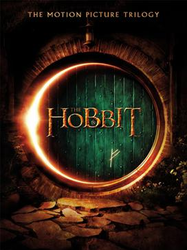

Sebastian is cool
Eden is cool
Omeed is also cool
This is an HTML page that I made using Visual Studio Code
A paragraph consists of one or more sentences that form a self-contained unit of docourse. The start of a paragraph is indicated by a new line.
Text is easier tp understand when it is split up into units of text. For exmaple, a book may have chapters. Chapters can have subheadings. Under each heading there will be one or more paragraphs
This is how we make our words appear bold.
Inside a product description you might see some key features in bold.
This is how we make a word appear italic.
This is a potato Solamum tebersum
Captain Cook sailed to New Zealand on the Endeavour.
The Earth
gets one hundred tons heavier every day
due to falling space dust.
Venus is the only planet that rotates clockwise.
Jupiter is bigger than all the other planets combined.
Eggs are one of my favourite foods. here is a recipe for deliciously rich scrambled eggs.
This is a paragraph.
This is a red paragraph
Logon
Open Notepad++
Wirte some code
Save it as an HTML file using the All Types File Type
Run it using Chrome
Eggs
Milk
Carrots
Bananas
Cheese
Zoricich
Bray
Fatiolofa
Faumaumina
Reid
Lewis
Cars
Cars 2
Cars 3
Planes
Planes Fire and Rescue
Macaroni and Cheese
Sushi
Steak
Salmon
Mince pies
Imagine Dragons
Imagine Dragons
Imagine Dragons
Imagine Dragons
Imagine Dragons


Sir Peter Jackson's movie The Hobbit is set to be filmed in Nelson at the end of this year, with hundreds of crew members expected to stay in the region.
Local moteliers have been contacted by the film's production company, 3 Foot 7, which is looking for accommodation for about 400 to 500 people in November and December. Motel Association of New Zealand Nelson's John Gilbertson, who owns Arrow Motels on Golf Rd, confirmed some of the association's members were holding rooms for such a group.
Filming for the anticipated two-part movie resumed last week and will continue until December. The film features international celebrities such as Evangeline Lilly, Orlando Bloom, Stephen Fry, James Nesbitt and Martin Freeman.
Mr Gilbertson said 3 Foot 7 made inquiries for booking 400 to 500 rooms in early December in Nelson and Golden Bay. He said there were 50 Nelson members in the association with more than 700 rooms among them, so members could accommodate the film bookings across the region.
The Hobbit publicist Melissa Booth said she was unable to confirm locations as they were in the throes of filming. "We're just looking forward and trying to get the film made. I think everyone is happy to be back at work."
Pohara motelier Steve du Feu said the filming of The Hobbit was "good news" for businesses in Golden Bay. His motel, The Sandcastle, is one of a number in Golden Bay that have been booked out by 3 Foot 7 for 10 days in mid-November and a week in early December. "The increased activity in the bay associated with this will be an awesome boost after what has been a pretty quiet winter. The crew will be made to feel very welcome," he said.
Bob Haswell of Clifftops Retreat in Ruby Bay said he had friends working on the film in Wellington and "it looks like some of them might be coming to Nelson". Mr Haswell is connected to Tasman Helicopters, which was involved during the filming of parts of The Lord of the Rings trilogy in the Nelson region, but he said the company had not been approached about helping with The Hobbit.
Nelson Mayor Aldo Miccio said the likelihood that The Hobbit crew might be coming to Nelson was news to him, but he was not surprised. "It's in line with what we have been hearing – that Nelson is going to be a destination for filming."


There was a time when children's telecommunications meant two cans connected with string or, for luckier kids, a set of walkie-talkies. But today the mobile phone has become ubiquitous in school playgrounds, with children as young as five having their own. A company in England is even targeting toddlers with a phone designed in the shape of a teddy bear.
Three-quarters of Australian children aged 12 to 14 own a mobile phone but by the time they are 15 that number surges to 90 per cent, according to figures from the Australian Communications and Media Authority.
"Because it's parents who come in and sign up for the phones it's difficult to say exactly how much this area has grown but the age at which kids get phones is getting younger," says Carmen Gould, head of customer service at Australian retail chain Crazy John's. "Whereas before it was often teenagers getting mobiles, it's not unusual now for parents to buy phones for children as young as eight."
Most parents cite the peace of mind that comes from being able to contact their children at any time as the main reason behind the trend. "All research into this trend suggests that parents believe that they can improve the safety and security of their children by giving them a phone," says Randal Markey of the Australian Mobile Telecommunications Association.
This view is backed by the most recent study of mobile use among youngsters by the NSW Commission for Children and Young People. After interviewing 1500 children for its Mobile Me report, it concluded it was nearly always parents who decided to get their children phones - to contact them in "case of emergencies". The other reason was that a phone would give greater independence.
Researchers speak out:
"It can be a huge problem for some children, who can run up bills of up to $500 a month. They have little concept of what they are spending - this can lead to getting into constant debt, a very bad financial situation which they can carry on into their adult life with things like credit cards."
As for addiction, two Spanish teenagers made headlines around the world in June when they were admitted to a mental health clinic for "phone addiction". The children, 12 and 13, were sent there by their parents, who said they could not carry out normal activities without their mobiles and would spend six hours a day on them.
Such extreme behaviour is uncommon, Queensland University of Technology psychologist Shari Walsh says. "There are certainly teenagers who we are seeing that have an over-reliance on their mobiles and who become anxious at the prospect of going without their phone. "They worry that they'll run out of battery or credit and they'll be forced to go without this way of communicating with their network of friends. It's a big fear for them and it illustrates just how important they see the phone as being to their lives."
Cell Phone Learning ToolsYou could say it was a $13 million save. But to Tony Lochhead, the man who thought he'd cost New Zealand a spot at the biggest sporting show on earth, Mark Paston's heroics were priceless. For 88 minutes on Saturday night, Westpac Stadium was abuzz. But for the other two, there was almost a deathly silence.

It is the 51st minute and referee Jorge Larrionda rules Lochhead has brought down Bahrain's Abdulla Omar inside the box and awards a penalty. It is surreal. Despite a record crowd of 35,194, you could have heard a pin drop.
Lochhead's heart was firmly entrenched in his mouth as he contemplated the potentially devastating scenario, given that a 1-1 draw would have seen Bahrain qualify on the away-goals rule.
"I thought I had cost us a trip to the World Cup," the Phoenix defender said."I thought I'd done enough to get there but [Omar] just managed to get in front of me. I didn't really touch him that much, but he went down pretty easily and the ref pointed to the spot. It was such a nerve-racking moment but Pasty has come up with an unbelievable save and he's saved my skin, big time."
"It wasn't a good feeling, but when he saved it I was celebrating as if I had scored myself."
All Whites captain Ryan Nelsen had his money on Paston to save the shot of Bahrain's rangy centre back, Sayed Mohamed Adnan.
Nelsen, who led manfully, was fifth in line to take a penalty in the eventuality of a shootout and he had lined up himself against Paston in training last week.
"I can remember taking a penalty at practice and looking up and seeing Pasty, and I couldn't see any of the goal.
"I just saw this big guy in front of it, so I knew he had a chance of saving it and in the end he pulled off a world-class save."
"I said to him before the Bahrain game that for us to go through we're going to need a world-class keeper and world-class saves, and throughout 180 minutes he proved incredible."

Paston, 32, the Phoenix goalkeeper who hails from Hawke's Bay, was swamped by his team-mates after the final whistle. They knew how big a part he had played in getting the team to South Africa.
But the big stopper, who probably would not have even been playing on Saturday had Glen Moss not been suspended, was typically down to earth after the initial euphoria.
"I just guessed, actually," he nonchalantly stated of the penalty.
"Apparently they [the coaching staff] were trying to get it out to me from the sideline that [Adnan] goes right, but it didn't get to me, so it's a good job I went that way. He didn't hit the best penalty, but I went the right way and it stuck."
Asked if he had prepared for it, Paston said: "Yeah, but I thought it would be at the end of the game, not in the middle of it."
He heaped praise on the men in front of him.
"The whole second half, the boys were incredible. They were diving into tackles and all sorts. It comes down to that, it was amazing what they did for me."
And it is amazing what Paston and his team-mates have done for football. Not only did he play a major part in getting the team to the World Cup, but the cash injection for the sport – about $13 million just by qualification – will be crucial.